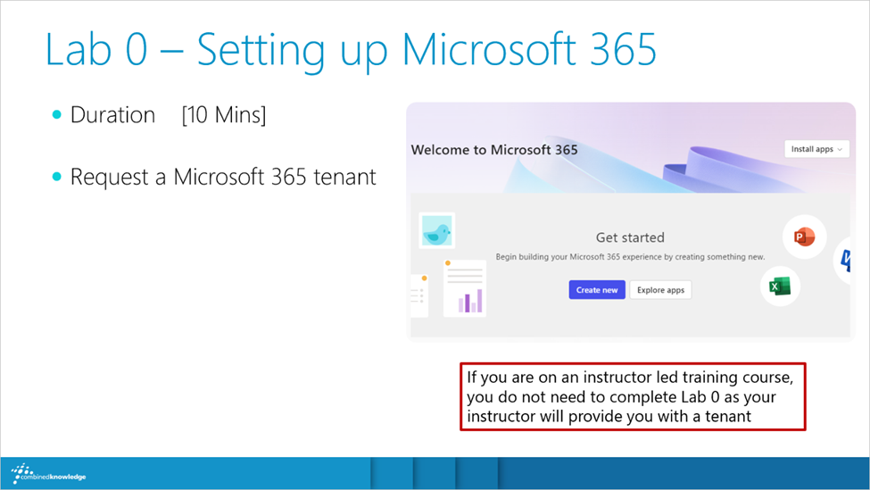

Lab 0 – Setting up Microsoft 365

If you are
on a course with an instructor, he/she will provide you with a Microsoft 365 tenant to use, so please skip Lab 0. If
you are on a self-taught course, please proceed with Lab 0:
Exercise 1 – Request a Microsoft 365 tenant
Begin this course by requesting your Microsoft 365 tenant. We will use a private browser to separate
this training tenant from any existing tenant you may have signed into.
- Open your preferred web browser, then open a private browser window (use Ctrl + Shift + N for Edge or Chrome)
- Next enter the URL of https://developer.microsoft.com/en-us/microsoft-365/dev-program and press the Enter key on your keyboard
- Click on Join now
- Under Let’s set up your account enter a Microsoft email address* then
click Next, will either be asked for your password or, you may use your authenticator app if
registered
*if you do not have an email address you can create a new account using www.outlook.com choose to Sign up and
follow the instructions making a note of your email address and password
- Select a Country/Region, enter in a company name (this can be fictitious) and your
preferred language, agree to the terms and conditions and click Next

- For the next question select Personal projects and select Next
- On the final question, please select at least one area of interest before clicking Save
- Once you have completed these questions you will be asked about which type of tenant you would
like to create, leave the selection as Instant sandbox

- Scroll to the bottom of the menu and click Next
- In the menu, Set up your Microsoft 365 E5 instant sandbox firstly choose
your region for your data centre, we recommend one close to your region

- Enter your admin username, we recommend the format firstname.lastname e.g. steve.smith and then
enter and re-enter a password

- Leave the same password for the fictitious accounts, scroll to the bottom and click Continue
- You will be required to send a verification number to your phone, please pick your region then
enter your phone number then click Send Code
- Check your phone for a code, enter the code into the Enter the code field
then click Set up
- With your tenant set up, you will see the following summary (note your email address domain will
differ)

- Select Go to subscription
- Enter your password
- On the Action Required notification, select Ask later
and on Stay signed in? select No
- To turn off multifactor authentication, open a new browser tab
- Navigate to: https://portal.azure.com/#blade/Microsoft_AAD_IAM/ActiveDirectoryMenuBlade/Properties (when
prompted click Ask later then No)
- Scroll to the bottom of the page and click Manage security defaults
- Set the Security defaults to Disabled

- Under Reason for disabling select My organization is
using Conditional Access
- At the bottom of the pane click Save and then Disable
- Multifactor authentication is no longer required to complement signing into this tenant, you can
now close the web browser tab titled MSFT, returning you to the Microsoft 365 home page, leave this page open for
upcoming exercises